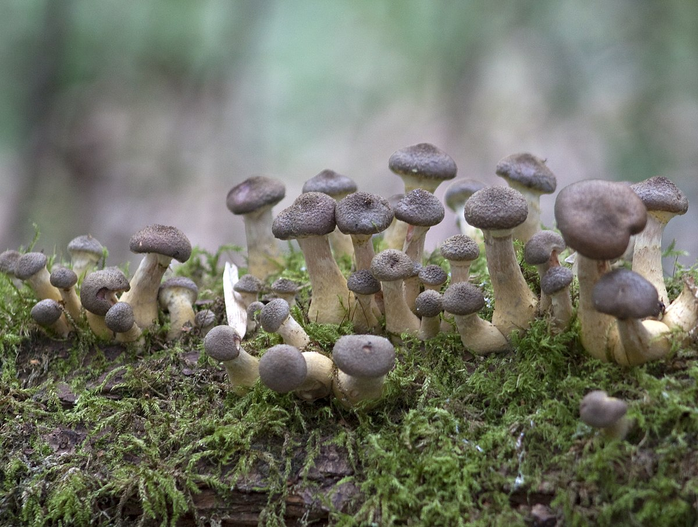

Ложный серный опенок (ядовит)

Информация
- ШЛЯПКА: сначала кольчатая, затем плоско-выпуклая, тонкая, мало мясистая, голая, желто-серного цвета, темного в центре.
- ПЛАСТИНКИ: прикрепленные, частые, узкие, оливкового или серного цвета.
- НОЖКА: тонкая, полая, часто изогнутая, желто-серного цвета, нижняя часть ножки более темная.
- МЯКОТЬ: желтого цвета.
- СПОРОВЫЙ ПОРОШОК: коричневого цвета.
- РАСТЕТ: большими группами на пнях и засохших деревьях летом и осенью.